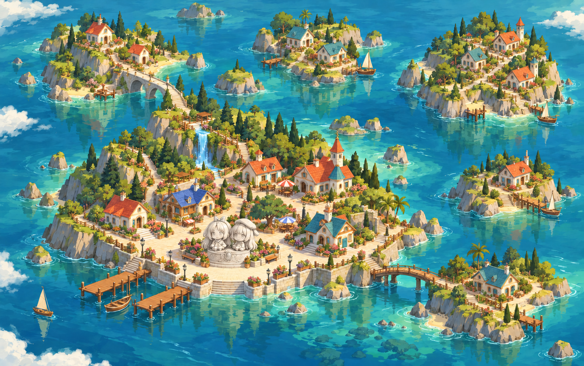

不吱岛 · 群岛地图画稿
新版静态画稿：双人雕像与基座改为无彩绘的浅灰白石材，以自然明暗表现雕刻细节。保留手绘海景画风、六座岛的房屋、主岛大广场、石拱桥和木栈道。事务所等功能仍集中在主岛。尚未替换现有网页。

如果图片仍未显示，请点击上方「打开原图 / 放大查看」。
新版静态画稿：双人雕像与基座改为无彩绘的浅灰白石材，以自然明暗表现雕刻细节。保留手绘海景画风、六座岛的房屋、主岛大广场、石拱桥和木栈道。事务所等功能仍集中在主岛。尚未替换现有网页。

如果图片仍未显示，请点击上方「打开原图 / 放大查看」。